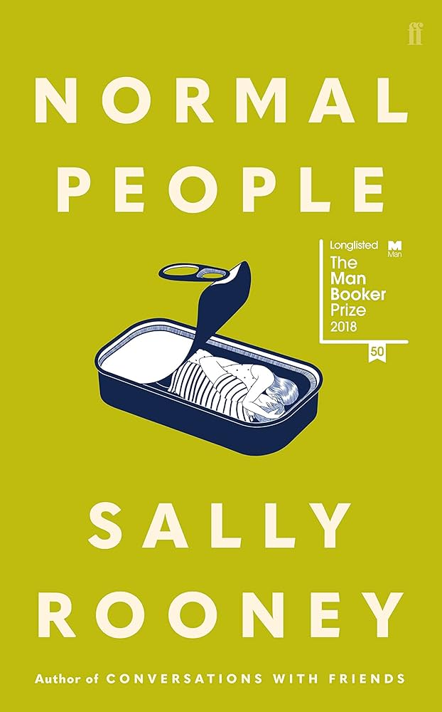
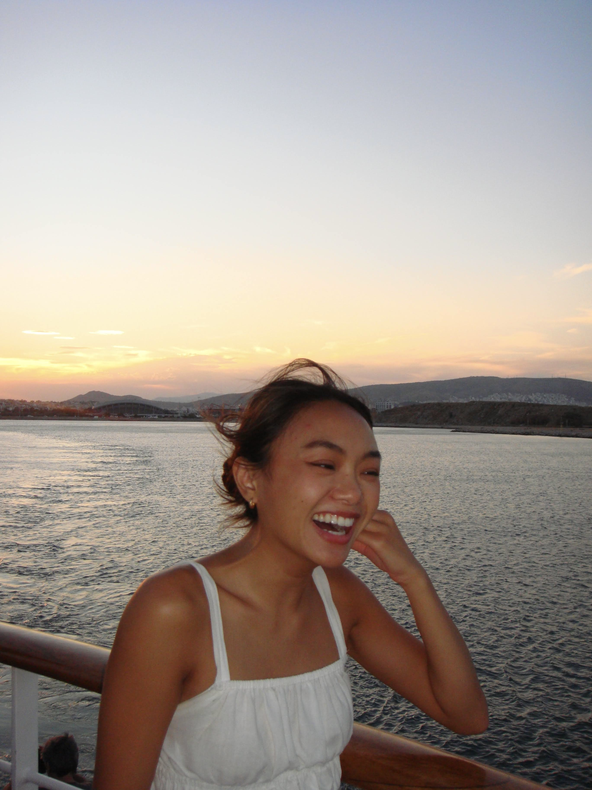
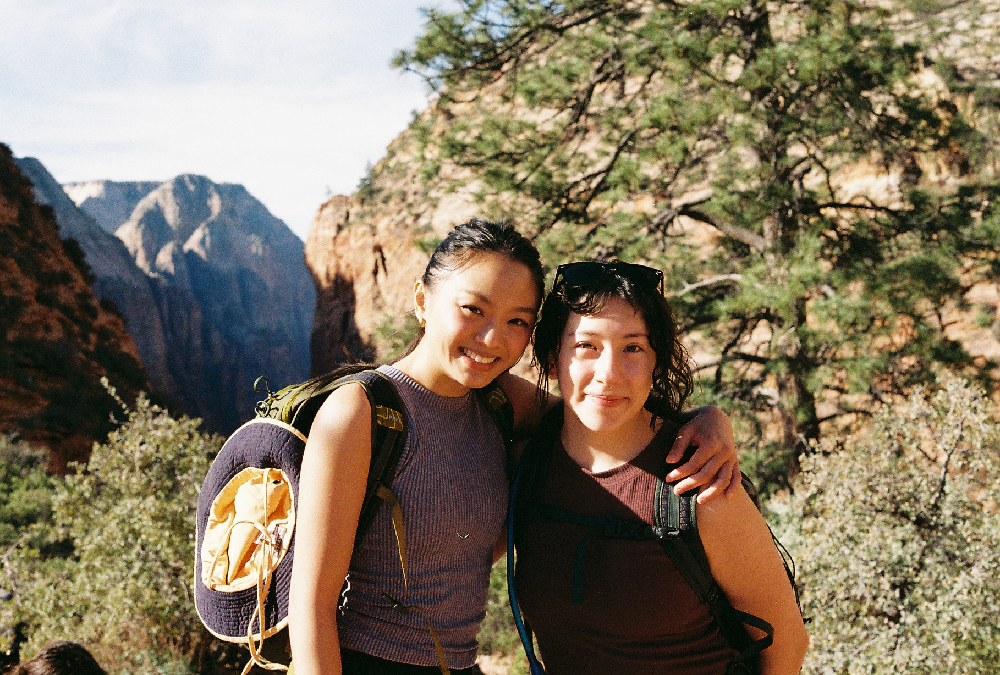

WelcomeMN
Immigrant resources made legible: navigation, trust, and plain language for newcomers.
Hi, I'm Quynh. I'm a product designer working at the intersection of AI and human-centered systems: health tech, media, and creative tooling. ✴︎ ✎
Currently MHCI @ Carnegie Mellon
other things I've made
[1.0] Commentary on attention, technology, and how we live online.
[2.0] A film photobooth built for the slow joy of analog in a fast, pixel-perfect world.
[3.0] Picklepals, a team management app for players to organize games and leagues.
[4.0] An intentional redirect app for the moment after you pick up your phone.
But most people call me Q.
I'm a product designer working at the intersection of AI and human-centered systems. I care about public trust in technology and how design can make complex, high-stakes information transparent and accessible for the people who need it most, in health tech, media, and civic systems.
Before studying HCI at Carnegie Mellon, I spent three years in editorial at an independent literary press producing Pulitzer Prize finalists and National Book Award winners. A submission portal failure that systematically blocked writers from underrepresented communities made something clear: information architecture is never neutral — and it solidified my commitment to human-centered design.
I also create content about technology, attention, and digital behavior, reaching 120K+ on social platforms. My work has been featured in the Associated Press and Newsweek.
Outside of work you can find me deep in a literary fiction novel, running, playing tennis, searching for the best matcha in the city, or sitting outside looking at trees longer than most people think is reasonable.
current nightstand stack

People can't help but change one another.
Normal People
Now that you don't have to be perfect, you can be good.
East of Eden

Hope and wait.
The Count of Monte Cristo
life outside the brief

